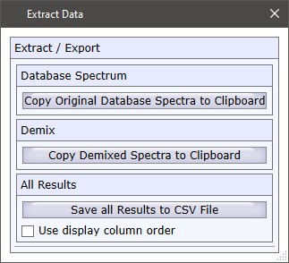

|
结果导出
|

复制原始数据库光谱到剪贴板
将原始数据库光谱复制到剪贴板。仅适用于自定义数据库。添加光谱到自定义数据库时，原始光谱始终与预处理的搜索光谱一起额外存储。您可以粘贴数据到任何WITec Project实例中。
复制解混光谱到剪贴板
将解混结果光谱复制到剪贴板。您可以粘贴数据到任何WITec Project实例中。
保存所有结果到CSV文件
将所有显示的结果保存到分号分隔的ASCII文件中。
使用显示列顺序
如果选中，csv文件的结果将具有与当前显示的结果列表相同的顺序（例如按HQI排序）。否则使用来自WITec Project或导入文件的搜索光谱的原始顺序。